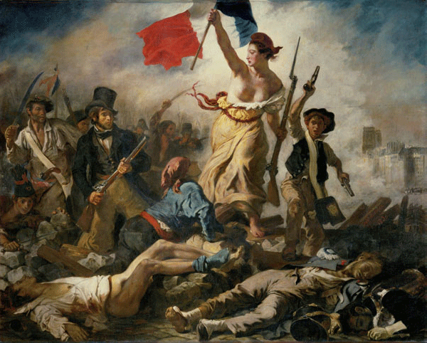
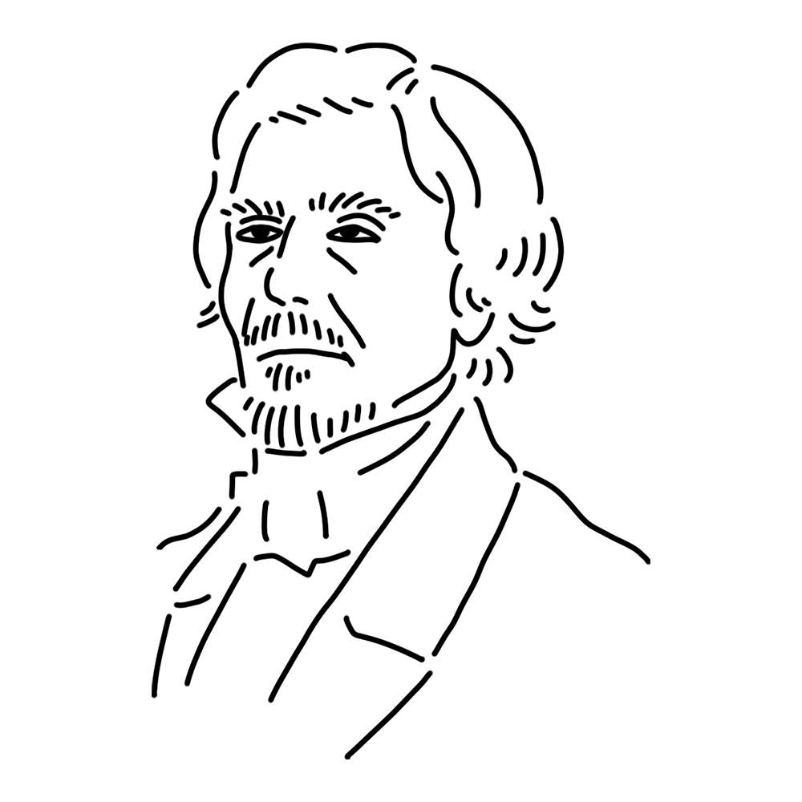

She was a revolutionary muse who established a new trend, "Romanticism," in French art that was steeped in classicism. She was sociable, humorous, and caring towards her juniors. Countless muses adored her, making her a true hero.
France
"Liberty Leading the People"
"The Massacre at Chios"
"The Death of Sardanapalus" etc.

This work is based on the July Revolution of 1830 in France. The bare-chested woman in the center is Marianne, the goddess who symbolizes the nation of France itself. The man in the top hat is said to be modeled after Delacroix himself, but this is uncertain. This work, which depicts current events with bold, rough brushstrokes, is a symbol of Romanticism.
Year
1830
Medium
Oil on canvas
Dimension
259 cm x 325 cm
Collection
Louvre Museum (France)

A painter who symbolizes French Romanticism. He used rich colors and intense brushstrokes, and excelled at portraying current events with emotion. He often clashed with the powerful neoclassical painters of the time, but at the same time, he possessed a strong sense of respect for tradition. His rebellious spirit had a major influence on later painters, and laid the foundation for modern art, which led to Impressionism. The diaries he left behind over several years reveal the artist's struggle with art despite his frail health.
Ferdinand Victor Eugène Delacroix
April 26, 1798
August 13, 1863(aged 65)